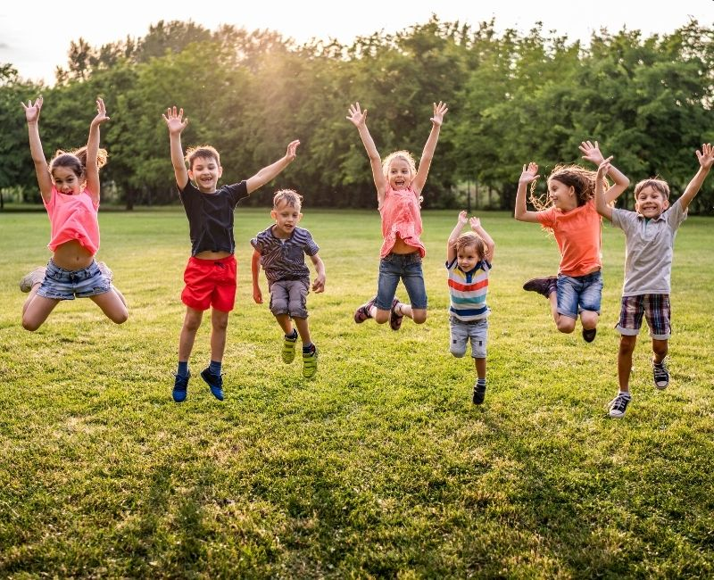
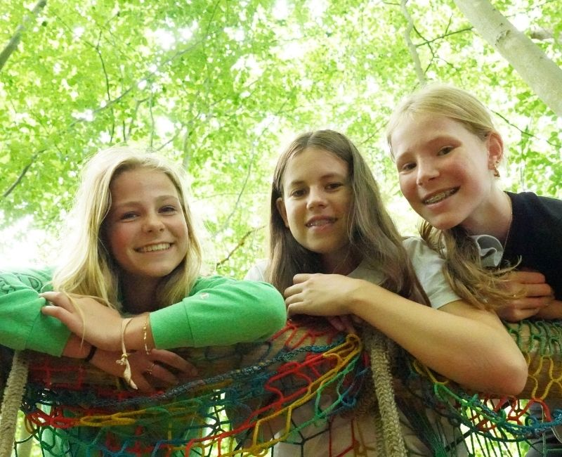
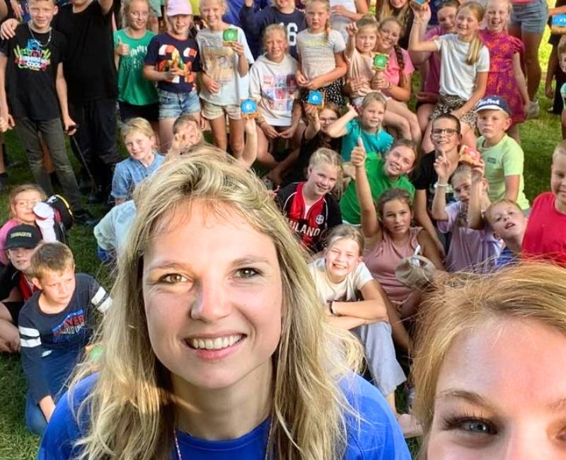

Samen jezelf zijn
Niet perfect. Wel echt.
Jong Nederland is geen strak plaatje. Het is een plek waar kinderen zichzelf mogen zijn, waar vrijwilligers ruimte maken voor plezier, creativiteit en verbinding.
Jong Nederland
Een plek waar kinderen en jongeren spelen, ontdekken, maken, lachen en groeien in zelfvertrouwen.

elke week anders gewoon jezelfWat is Jong Nederland?
Bij Jong Nederland komen kinderen, jongeren en vrijwilligers samen in hun eigen lokale club. De ene week is het creatief, de andere week actief, buiten, binnen, rustig, gek of juist spannend.

Doe mee
Vul je postcode of plaats in en ontdek welke Jong Nederland club dichtbij zit.

Samen jezelf zijn
Jong Nederland is geen strak plaatje. Het is een plek waar kinderen zichzelf mogen zijn, waar vrijwilligers ruimte maken voor plezier, creativiteit en verbinding.
Elke week iets nieuws
Spellen, uitdagingen en activiteiten waarin iedereen mee kan doen.
Bekijk aanbodMaken, bouwen, verzinnen en proberen zonder dat alles perfect hoeft.
Ontdek ideeënEen vaste groep waar kinderen zichzelf kunnen zijn en erbij horen.
Doe meeWaar ben je naar op zoek?
Bekijk wat Jong Nederland is en vind een club in de buurt.
Vind een clubGeef kinderen zelfvertrouwen en beleef samen avonturen.
Word vrijwilligerOntdek ondersteuning, verzekering, spelaanbod en trainingen.
Bekijk voordelenNiet alleen kamp
Van een rommelige knutseltafel tot een spannend avondspel. Van koken in het clubgebouw tot een weekend weg. De kracht zit juist in de afwisseling.
Ervaringen
“Bij Jong Nederland voelt het niet als een vereniging, maar als een grote vriendengroep.”
Vrijwilliger bij Jong Nederland
Voor lokale clubs